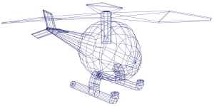
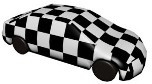
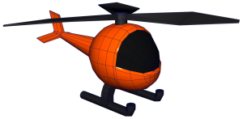
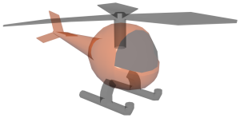
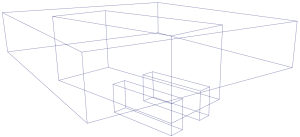
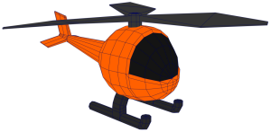

您可以更改用于确定 Maya 如何在视图面板中绘制所有几何对象的显示模式。
这些显示模式根据每个视图面板设置。因此，您可以在每个面板中显示不同的模式。但是，您可以根据需要在一个视图面板的“着色”(Shading)菜单中设置这些选项，然后选择(Shading > Apply Current to All)，以便将当前视图面板中的设置应用于所有其他视图面板。
| 对象显示形式 | 操作 | |
|---|---|---|
|
线框(Wireframe) |
 |
按 4 键 或 单击面板工具栏中的 图标。 或 在视图面板中，选择(Shading > Wireframe)。 |
|
着色(Shaded) |
|
按 5 键 或 单击面板工具栏中的 图标。 或 选择(Shading > Smooth Shade All)。 您还可以选择(Shading > Smooth Shade Selected Items)，以便仅对选定对象进行着色。 |
|
使用硬件渲染纹理进行着色 |
 |
按 6 键 或 启用了“对所有项目进行平滑着色处理”(Smooth Shade All)时： 单击面板工具栏中的 图标 或 选择(Shading > Hardware Texturing) |
|
着色对象上的线框 |
 |
启用了“对所有项目进行平滑着色处理”(Smooth Shade All)时： 单击 图标 或 选择(Shading > Wireframe on Shaded) |
|
默认材质 |
|
启用了“对所有项目进行平滑着色处理”(Smooth Shade All)时： 单击 图标 或 选择(Shading > Use Default Material) |
|
X 射线模式(X-Ray Mode) |
 |
X 射线着色自动采用轻微透明度显示对象，以便您查看和选择不透明曲面后面的物体。 有三种 X 射线显示模式：
提示： 可使用 Alt + A 在所有这些模式之间切换。
|
|
边界框(Bounding Box) |
 |
选择(Shading > Bounding Box) |
|
平面（面状）着色 |
|
选择(Shading > Flat Shade All)或“对选定项目进行平面着色”(Flat Shade Selected Items) |
|
恒定着色 |
 |
选择(Lighting > Use Flat Lighting)。 您还可以启用(Shading > Wireframe on Shaded)来查看对象上的几何体线框。 |